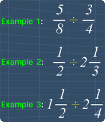

Examples on How to Divide Fractions
Lesson Objective
In this lesson, we will see more examples on how
to divide fractions. We will also see how
we can use common factors to simplify the
division.
About This Lesson
After learning the basics, let's take a look
at some more example questions. This will help us
to gain better understanding on how to
divide fractions.
Each of these examples will have the following fractions respectively:
Each of these examples will have the following fractions respectively:
- 2 proper fractions
- 1 proper and 1 mixed fractions
- 2 mixed fractions.

Tip #1 - The basics
The previous lesson had explained the basics behind dividing fractions.
Here is the summary:
-
Know how to find the reciprocal of a fraction
To find the reciprocal of a fraction, we just need to swap the numerator and denominator of that fraction. -
Steps to
divide fractions
We can divide fractions by:
1) First, change the division sign to multiplication sign
2) Then, change the divisor to its reciprocal.
Math Video Transcript
Multiple Choice Questions (MCQ)
Now, let's try some MCQ questions to understand
this lesson better.
You can start by going through the series of questions on how to divide fractions or pick your choice of question below.
You can start by going through the series of questions on how to divide fractions or pick your choice of question below.
- Question 1 on dividing a proper fraction with a mixed fraction